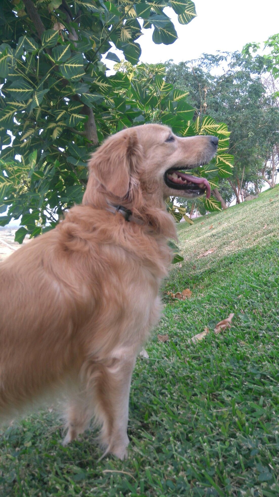
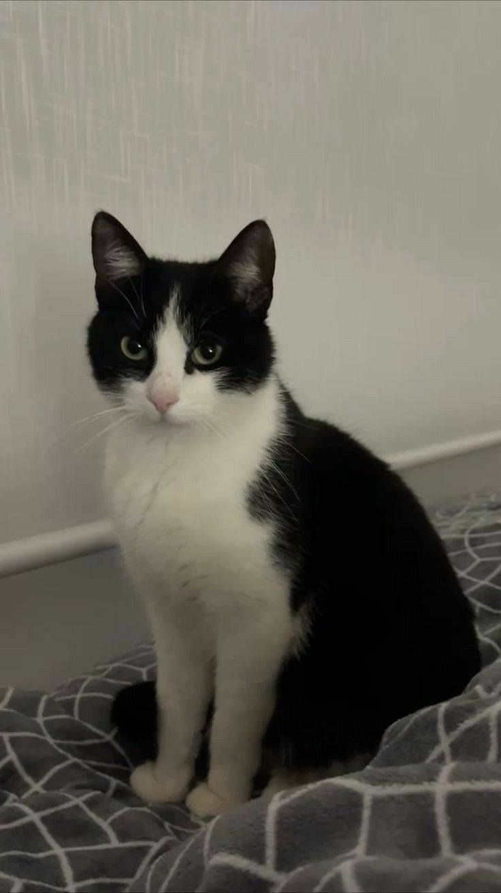
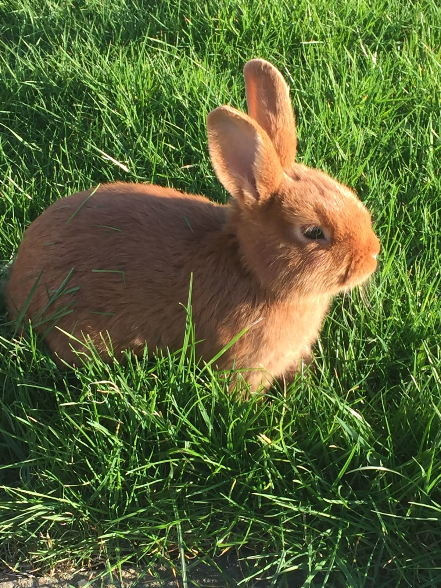

"Un compañero de vida nunca se va del todo, vive eternamente en nuestros recuerdos."

"Gracias por enseñarme el significado del amor incondicional y acompañarme en cada paso."

"Tus ronroneos aún calientan mi alma. Siempre serás el rey del hogar."

"Llenaste de ternura y alegría cada día con tus pequeñas travesuras."